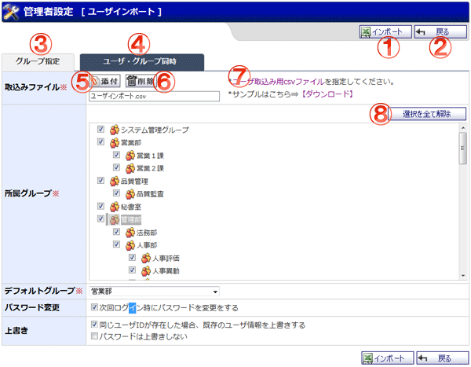

csvファイルからユーザのインポートを行う画面です。

機能説明
インポートボタンユーザインポート（確認）画面へ遷移します。入力内容に不備がある場合エラーメッセージが表示されます。 |
戻るボタン遷移元の画面へ遷移します。 |
|---|---|
グループ指定タブグループを指定してユーザーをインポートする画面を表示します。 |
ユーザ・グループ同時タブユーザーとグループを個別に指定してインポートする画面を表示します。 |
添付ボタン添付ファイル選択画面をポップアップで表示します。ファイルを選択し、確定すると添付のリストに選択したファイル名が追加されます。 |
削除ボタン添付のリストで選択中の添付ファイルを削除します。 |
ユーザ取込み用csvファイルリンクユーザ取込み用csvファイルのサンプルをダウンロードします。 |
選択を全て解除ボタン所属グループを何も選択されていない状態にします。グループを誤って選択しすぎた場合など、リセットするために使います。 |
表示・入力項目説明
取り込みファイル
ファイルを取り込みます。添付ボタンでファイルを選択します。
所属グループ
インポートするユーザに所属させるグループを選択します。
デフォルトグループ
インポートするユーザに設定するデフォルトグループを選択します。
上書き
同じユーザIDが存在した場合の上書き設定を選択します。
パスワード変更
初回ログイン時にパスワード変更をするか選択します。